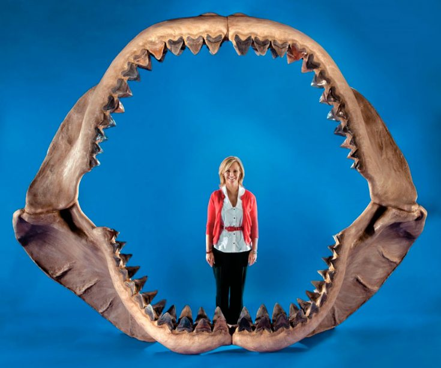
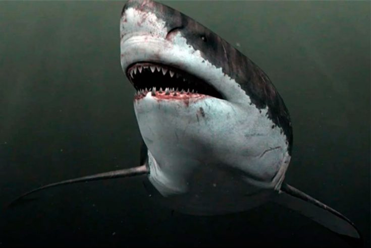

Описание мегалодона
Свое название эта акула-монстр, которая обитала в водах Мирового океана в палеогене/неогене, хотя, по
мнению
многих специалистов она захватила плейстоцен, получила в связи с огромной пастью и острыми зубами. В
переводе с
греческого мегалодон означает «большой зуб».
Специалисты также считают, что эта акула держала в
страхе
морских обитателей на протяжении 25 млн. лет назад и исчезнув около 2-х с половиной млн. лет назад.
Внешний вид
Воссоздать реальный портрет мегалодона, как типичного представителя хрящевых видов рыб, лишенных костяка, помогли зубы этого чудовища, которые находили ученые в разных точках океанов. Кроме зубов, специалистам удалось отыскать позвонки, а также целые позвоночные столбы. Они сохранились до наших дней из-за большой концентрации кальция, что позволяло акулам, а точнее их позвонкам, выдерживать огромные механические нагрузки при движениях этого существа в толще воды.
Исторический факт! Зубы подобной акулы в свое время считали обычными каменистыми образованиями, пока они не попали к датскому анатому и геологу Нильсу Стенсену. Ему удалось определить, что эти каменистые образования не что иное, как зубы мегалодона. Это произошло в 17-м веке, после чего этого ученого начали называть первым палеонтологом.
В первую очередь удалось реконструировать челюсть гигантской акулы, которая вмещала до 5-ти рядов крепких и острых зубов, а их количество составляло 276, при этом длина челюсти составляла около 2-х метров. Очередной этап состоял из воссоздания тела мегалодона, которое имело огромные размеры. Особенно массивными были женские особи, при этом предполагалось, что монстр имел родственные связи с белой акулой.
В результате, получился скелет акулы, длиной около 11,5 метров, который по своей форме напоминает скелет большой белой акулы. При этом размеры существенно увеличены, как в длину, так и в ширину, что пугает многих посетителей Морского музея в штате Мэриленд в США. Череп отличается внушительными размерами, больше в ширину, а челюсти гигантские с набором острых и больших зубов. Рыло короткое и тупое, в результате ихтиологи говорят, что «мегалодон был свиньей». Другими словами, существо отличается отталкивающей и наводящей ужас внешностью.
Уже в наши дни ученые стали отходить от определения, что мегалодон имеет схожесть с кархародоном (белой акулой). Все чаще можно услышать мнение, что этот монстр больше напоминает песчаную акулу, но аномальных размеров. Ученые также установили, что реальное поведение этого монстра, в связи с его огромными размерами и особенностями среды обитания, кардинально отличалось от характера поведения и образа жизни современных акул.
Размеры мегалодона
Естественно, что в наше время трудно определить, какие именно размеры имел мегалодон, поэтому споры по этому поводу не утихают до сих пор. Чтобы определить реальные размеры, ученые разрабатывают различные методики, которые основаны на количестве позвонков или на соответствии размеров зубов и туловища. Зубы этого древнейшего хищника, обитающего в толще воды Мирового океана, до сих пор находят на дне в различных его частях. Это явное свидетельство того, что мегалодоны обитали на всей акватории Мирового океана.
Интересная информация! Кархародон имеет похожие по форме зубы, но они не настолько массивные и крепкие, как его вымершего сородича. Зубы кархародона почти в 3 раза меньше и «заточены» не настолько равномерно. При этом у мегалодона нет пары боковых зубов, которые имеют свойство постепенно стачиваться.
Акула-монстр была вооружена самыми большими зубами, известными современным ученым, по сравнению с другими вымершими акулами, обитающими на протяжении всей истории существования Земли. Размеры зубов по диагонали составляют почти 20 см, а некоторые невысокие клыки достигали высоты не меньше 10 см. Зуб современной белой акулы не больше 6 см, поэтому есть с чем сравнивать.
В результате исследования и составления различных останков мегалодона, основу которых составляют позвонки и многочисленные зубы, ученые пришли к выводу, что взрослые особи вырастали в длину до полутора десятков метров и могли весить около 50 тонн. Более внушительные размеры требуют серьезных дискуссий и обсуждений.
Характер поведения и образ жизни
Как правило, чем больше по размерам рыба, тем меньше у нее скорость перемещения, для чего необходима достаточная выносливость и высокий уровень метаболизма. Именно к таким рыбам и относился мегалодон. Поскольку обмен веществ у них не настолько быстрый, то их движения не отличаются энергичностью. По таким показателям мегалодона лучше сравнивать с китовой акулой, но никак не с белой. Существует еще один фактор, негативно влияющий на некоторые показатели акулы – это небольшая надежность хрящевой ткани, по сравнению с костной, даже, не смотря на высокий уровень кальцинирования.
Поэтому мегалодон не отличается высокой энергичностью и подвижностью, поскольку практически все мышечные ткани были соединены не с костями, а с хрящами. В связи с этим, хищник больше предпочитал сидеть в засаде, высматривая подходящую для себя добычу. Такая значительная масса тела не могла позволить для себя преследование потенциальной добычи. Мегалодон не отличался ни скоростью, ни выносливостью. Акула убивала своих жертв 2-мя способами, известными в наши дни, а способ зависел от того, какие размеры имела очередная жертва.
Важно знать! Охотясь на небольших китообразных мегалодон шел на таран, нанося основной удар по участкам с твердыми костями. Когда кости ломались, то они травмировали внутренние органы.
Когда жертва испытывала сильный удар, то мгновенно теряла ориентацию и способность уйти от нападения. С течением времени, она погибала от серьезных внутренних повреждений. Был и второй метод, который мегалодон применял по отношению к массивным китообразным. Это начало происходить уже в плиоцене. Специалисты находили многочисленные фрагменты хвостовых позвонков и костей от плавников, которые принадлежали большим китам плиоцена. На них были отмечены укусы мегалодонов. В результате обследования удалось выяснить и предположить, что хищник, таким образом, обездвиживал свою потенциальную добычу способом откусывания хвоста или плавников, после чего ему удавалось справиться с ней.
Продолжительность жизни
Поскольку считается, что акулы живут в пределах 40 лет, то предполагается, что мегалодоны жили не больше. Хотя стоит отметить, что среди хрящевых рыб имеются долгожители. Например, полярная акула способна разменять сто летний юбилей. Но здесь имеется небольшая разница: полярная акула обитает в холодных водах, а мегалодон является представителем теплых акваторий. Естественно, что у этой акулы-монстра практически не было естественных врагов, кроме паразитов и патогенных бактерий.
Природные места обитания
По ископаемым останкам мегалодона специалисты пришли к выводу, что поголовье акулы-монстра было весьма многочисленным и населяло практически все акватории Мирового океана. Акула обитала в умеренных и субтропических зонах обоих полушарий, с условиями, когда температура воды находилась в пределах от +12 до +27 градусов.
Останки акулы были найдены в различных местах, таких как:
- Северная Америка
- Южная Америка
- Япония и Индия
- Европа
- Австралия
- Новая Зеландия
- Африка
При этом, зубы этого существа находили на значительном удалении от континентальных шельфов. В Венесуэле зубы этого огромного хищника были обнаружены в пресноводных отложениях, что свидетельствует о приспособленности хищника к различным условиям обитания.
Рацион мегалодона
На протяжении длительного периода времени, пока не появились зубатые киты в виде касаток, мегалодон находился на вершине пищевой цепочки, поэтому он не мог ограничивать себя в выборе объектов пропитания. Из-за больших размеров акулы в ее рацион питания входил широкий спектр живности. Благодаря наличию массивных челюстей и огромных зубов, причем достаточно острых, этот хищник запросто мог разделаться с любыми животными, с которыми современные акулы справиться не в силах.
Интересно знать! По мнению специалистов, у мегалодона была сравнительно короткая челюсть, поэтому хищник не мог плотно захватывать и эффективно и быстро пожирать свою жертву. Акуле приходилось просто отрывать фрагменты плоти и заглатывать их.
Основу рациона питания мегалодона составляли более мелкие животные, а также черепахи, поскольку акула своими мощными челюстями запросто давила их панцири, а зубы делали свое дело.
Кроме акул и морских черепах, мегалодоны охотились:
- На гренландских китов
- На мелких кашалотов
- На полосатиковых китов
- На одобеноцетоксов
- На цетатерий (усатых китов)
- На морских свиней и сирен
- На дельфинов и ластоногих
Мегалодон без особых усилий справлялся с животными, длина которых доходила до 7 метров. Это были примитивные усатые киты, у которых не хватало сил и энергии, чтобы уйти от преследования. Группа исследователей из США и Австралии, в 2008 году, с помощью компьютерного моделирования, определила, насколько мощным был укус мегалодона.
В результате расчетов были получены уникальные данные. Стало известно, что пасть мегалодона сжимала свою жертву в 9 раз сильнее, по сравнению с любыми современными акулами, а также в 3 раза сильнее, по сравнению с силой гребнистого крокодила, который является обладателем абсолютного рекорда по данному показателю. Несмотря на это, укус этого огромного хищника был заметно слабее некоторых вымерших видов, существовавших до мегалодона на нашей Планете.
Естественные враги
Несмотря на то, что мегалодон был суперхищником, у него все же имелись некоторые природные враги, в виде зубатых китов или кашалотов, таких как зигофизитеры и левиафаны Мелвилла. Этого хищника не боялись и другие гигантские акулы. Позднее появились касатки, которые также не боялись мегалодона и отдавали предпочтение охоте за молодью мегалодона.
Вымирание мегалодона
Подобные суперхищники исчезли с лица Земли на стыке плиоцена и плейстоцена, а это порядка 2,6 млн. лет назад, хотя бытует мнение, что около 1,6 млн. лет назад.
Причины вымирания
Специалисты до сих пор ломают голову над тем, какие определяющие факторы так серьезно повлияли на жизнедеятельность мегалодонов. Скорее всего, что решающими оказались несколько факторов, в том числе и глобальная смена климата. Еще в эпоху плиоцена между Северной и Южной Америкой поднялось дно, в результате чего появился Панамский перешеек, который разделил Тихий и Атлантический океаны. В результате этого сменилось привычное направление течений и в Арктику уже не доставлялось необходимое количество тепла. Таким образом, северное полушарие начало заметно охлаждаться.
Это первый и достаточно важный негативный фактор, который существенно повлиял на жизнедеятельность мегалодонов, которые были лучше приспособлены к теплым условиям обитания. В этот период появились крупные киты, которым больше нравились холодные акватории. Крупные киты начали мигрировать в теплый период в более прохладные акватории, поэтому мегалодон лишился привычного рациона питания.
Важный момент! Мегалодоны, лишенные крупной добычи, начали массово голодать, что послужило причиной каннибализма, в результате чего пострадали огромные популяции молодняка. Как результат, популяции этих суперхищников начали сокращаться, причем с большой скоростью. Вторая причина связана с появлением касаток, которые отличались более развитым мозгом и могли охотиться целыми стаями, поэтому мегалодонов они практически не боялись.
Поскольку акула отличалась более внушительными размерами, то она уступала в скорости и маневренности. Кроме этого, у мегалодона были другие уязвимые места, такие, как жабры, например. Вместе с тем, он часто обездвиживался, как и большинство акул, исчерпав запас сил и энергии.
Стоит ли верить, что мегалодон жив
По мнению некоторых специалистов, акула-монстр могла дожить до наших дней, поскольку существует один общеизвестный тезис: если по истечении 400 тыс. лет ничего не известно о каком либо виде, то только тогда можно считать этот вид вымершим. Кроме этого, имеются совсем свежие находки зубов мегалодонов, которым всего-то каких-то 11 тыс. лет. Их находили в Балтийском море и недалеко от Таити. Они не успели даже окаменеть, и признаны «детскими» зубами мегалодонов.
В 1954 году в обшивке австралийского судна «Рашель Кохен» были обнаружены 17 огромных зубов, застрявших в обшивке. Их удалось обнаружить, когда судно очищалось от ракушек. Когда сделали анализ извлеченных зубов, то выяснилось, что они принадлежат мегалодону.
Интересный момент! Многие скептически относятся к истории с австралийским судном, называя все это явной мистификацией, хотя по утверждениям оппонентов, даже на сегодняшний день Мировой океан изучен не больше, чем на 10 %, поэтому не исключено, что в скором будущем на просторах океана появится вымерший (как считается) мегалодон.
У этих специалистов, которые верят в современного мегалодона, имеются весомые аргументы, которые касаются реальной скрытности акульего рода. Поэтому неудивительно, что только в 1828 году мир узнал о существовании китовой акулы, а в 1897 году стало известно, что существует акула-домовой, которая буквально выплыла из глубин Мирового океана. Кстати, до этого момента считалось, что акула-домовой давно и бесповоротно исчезла с лица Земли.
Большеротые акулы стали известны человечеству только в 1976 году, когда одна из них просто застряла в якорной цепи научно-исследовательского судна, бросившего якорь возле о. Оаху, что на Гавайях. С того момента прошло немало времени, а большеротых акул удалось увидеть не больше 30 раз и то в виде падали, которую прибило волнами на побережье. Пока не удается провести всеобщее сканирование Мирового океана, хотя подобной задачи никто никому не ставил. Мегалодон, который мог приспособиться к большой глубине из-за своих огромных размеров не станет выходить на более мелкие участки.
Кашалоты, которых приравнивают к извечным соперникам мегалодонов, адаптировались к значительному давлению и способны погружаться на глубины до 3-х километров. При этом они изредка выплывают на поверхность, чтобы запастись глотком воздуха. По сравнению с кашалотом, у мегалодона были жабры, что делало его менее уязвимым, так как не было необходимости хотя и изредка, но подниматься на поверхность. Поэтому не исключено, что мегалодон просто затаился на огромной глубине до поры до времени.
В заключение
То, что даже в третьем тысячелетии человечество еще многого не знает – это факт, поэтому не следует утверждать, что мегалодон исчез раз и навсегда. Пока странно, что ученые, при таком уровне технического прогресса, никак не могут заглянуть в глубь океанов, чтобы определить, как много нам еще не известно. Это касается не только неизвестных доселе видов глубоководных рыб и других живых существ, но и других сюрпризов. Многие специалисты утверждают, что на дне океанов, в самых глубоких местах, куда человек еще не заглядывал, обустроены целые поселения инопланетян. Другими словами, на нашей Планете еще достаточно много загадок.